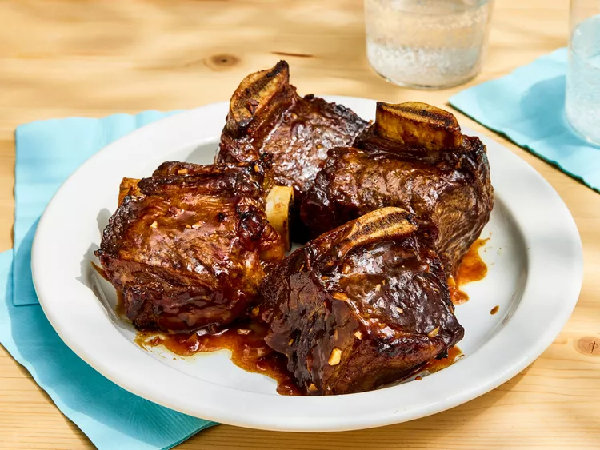

These unbelievably tender beef short ribs are a favorite for home cooks who want bold flavors without spending all day in the kitchen. By boiling the ribs first and then roasting them, you achieve a "low and slow" texture in just about an hour of total time.
The secret to this dish is the sweet and tangy sauce made with red wine, soy sauce, and a hint of curry powder. It creates a rich glaze that perfectly coats the meat, making it a simple yet delicious meal that yields three generous servings.
Home Page